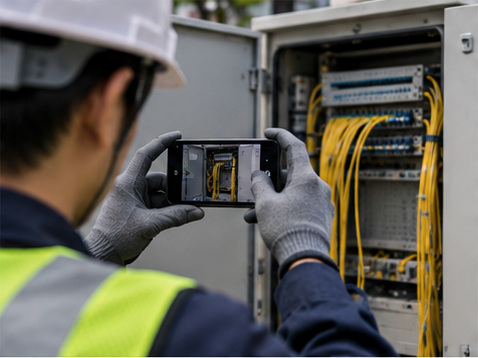

작은 회사가 많은 현장을 적은 인원으로 돌리는 정보통신공사업의 구조에서, 막힘을 늦게 알리는 문제 · 안전점검 누락 · 다음 현장으로 번지는 지연이 왜 생기고 왜 기존 방식으로는 막기 어려운지 정리했습니다.
업계 통계안전 법령 · 사고회사 인터뷰출처 21건
이 문서가 답하는 보완 요청
정보통신공사업 현장의 실제 문제 정의 (보완 요청 4)
문제마다 근거 — 협회 통계 · 정부 자료 · 보도 · 회사 인터뷰
문제 → 원인 → 기존 방식의 한계 → 필요한 기술 연결
신청기술복수 현장 업무 위험관리 AX 시스템
관련 특허출원 10-2026-0173957(2026-09-11 출원 · 등록 전)
기준 프로그램v0.6.1 · c74484cGitHub 저장소 커밋
작성일2026-11-23
H
(주)하나정보통신복수 현장 업무 위험관리 AX 시스템
보완자료 03현장 문제 정의
업계 구조
작은 회사가 많은 현장을 적은 사람으로 돌립니다
정보통신공사는 통신 · 네트워크 · CCTV · 방송설비 등을 설치하고 고치는 일입니다. 한 건 한 건은 작고, 현장은 많고, 기술자는 적습니다.
13,096개사
2025년도 실적신고 대상 업체[S1]
외부 출처
457,134건
2025년도 공사 건수 · 실적 19조 9,698억원[S1]
외부 출처
4,370만원
건당 평균 실적 (위 두 수치로 계산)[S1]
계산값
55.6%
시공능력평가 30억원 미만 업체 비중[S2]
외부 출처
4명
등록에 필요한 정보통신기술자 수(최소)[S3]
외부 출처
5.3명
업체당 소속 기술자 (63,671명 ÷ 약 1.2만 개사, 계산)[S4]
계산값
64.4%
업체 소속 특급기술자 중 60세 이상[S4]
외부 출처
25.8%
인력 수급 애로 1위 원인 ‘고용환경 불안정’[S6]
외부 출처
그래서 생기는 현장 조건
소액 · 다건 — 건당 평균 4천만원대. 기사 1명이 하루에 여러 현장을 차례로 맡습니다.
소규모 회사 — 기술자 4명이면 등록할 수 있고, 업체당 기술자는 평균 5명 남짓입니다.
숙련자 고령화 · 청년 유입 저조[S4,S5] — 경험이 적은 기사가 혼자 현장 판단을 하는 일이 늘어납니다.
AI 연출 사진기사는 장비를 싣고 현장 사이를 이동합니다. 이동 중에는 본사와 연락이 끊기기 쉽습니다.
본사 관리자 1명이 여러 기사의 여러 현장을 동시에 챙겨야 하는 구조 — 문제는 ‘누가 먼저 알아채느냐’입니다.
H
(주)하나정보통신복수 현장 업무 위험관리 AX 시스템
보완자료 03현장 문제 정의
하루 업무의 모습
기사 1명이 하루 여러 현장을 차례로 돕니다 — 한 곳이 늦으면 뒤가 모두 밀립니다
외부 자료로 본 현장
케이블 방송 하청 설치기사는 9~18시에 30분 간격으로 업무를 배정받아 ‘하루 평균 14건’을 처리했다는 노조 주장이 보도됐습니다(2019)[S7].
방문형 이동노동자 1,210명 조사에서 하루 평균 이동시간은 88.2분이었습니다(통신 업종 한정 아님, 2024)[S8].
원청이 단체대화방 · 메신저로 협력업체 기사에게 업무를 지시하고 진행 보고를 받은 사례가 보도됐습니다(2019)[S9].
건설 현장에서도 수기 출근부 · 엑셀 관리로 서류 누락 · 분실이 빈번하다는 보도가 있습니다(2026)[S19].
하나정보통신 현장 (인터뷰)
분해 · 설치를 시작한 뒤에야 예상과 다른 상황이 확인되는 경우가 있습니다[C1].
추가 장비나 숙련 기술자가 필요한 경우가 있습니다[C1].
지연으로 다음 현장을 계획한 날 방문하지 못한 사례가 있었습니다[C1].
다음 거래처에는 자세히 알리지 못하고 ‘오후가 될 것 같다’ 정도만 안내합니다[C1].
계산 예시시험용 가상 일정 위 그림은 실제 프로그램이 계산한 예시입니다. 보령 현장에서 ‘1시간 더 걸린다’고 보고하면, 이동시간 20분 · 25분을 더해 홍성은 50분, 예산은 45분 늦게 도착한다는 결과가 나옵니다. 사람이 머릿속으로 하기 어려운 계산을 보고 즉시 대신합니다.
AI 연출 사진본사는 지도와 일정표를 보지만, 현장 지연은 기사가 알려야 압니다.AI 연출 사진현장에서는 설비함 앞에서 바로 상황을 판단해야 합니다.

AI 연출 사진설치 상태를 사진으로 남기지만 본사 공유는 따로입니다.
H
(주)하나정보통신복수 현장 업무 위험관리 AX 시스템
보완자료 03현장 문제 정의
문제 1 · 막힘을 늦게 알림
현장에서 막혀도 본사는 기사가 전화하기 전까지 모릅니다
회사 인터뷰 (2026-11-13)
“작업이 원한 방향으로 안 나갈 때 직원이 연락 없이 혼자 붙잡고 해결하려 한다.”
“실시간으로 알면 먼저 제가 확인해서 바로 백업해 줬을 텐데.” — 신규 직원이 특히 그렇다[C1]
왜 생기나
보고는 기사 몫 — 기사가 전화나 메신저를 보내기 전에는 본사가 알 길이 없습니다.
경험이 적을수록 늦게 알림 — ‘혼자 해결해 보겠다’는 마음이 지원 요청을 늦춥니다.
예상과 다른 현장 — 뜯어 보고서야 장비 · 숙련 인력이 필요하다는 것을 압니다.
본사도 바쁨 — 여러 현장을 동시에 보는 관리자가 ‘연락 없는 현장’을 따로 챙기기 어렵습니다.
AI 연출 사진광케이블 분배함 앞에서 예상과 다른 배선 상태를 확인하는 장면(연출)
업계 배경
숙련 인력이 고령층에 몰려 있고[S4] 청년 유입이 적어[S5], 현장 판단을 혼자 해야 하는 기사가 늘어납니다. 막힌 순간을 본사가 일찍 알아야 숙련자 지원 · 장비 준비를 빨리 할 수 있습니다.
필요한 기술기사가 먼저 말하지 않아도, 프로그램이 ‘연락 없는 현장’을 찾아 양쪽에 알린다
조건
작업 시작 후
예정 소요의 절반(최소 20분)이 지났는데 진행 보고가 없음
›
기사에게
휴대폰이 먼저 묻기
‘예정대로 되고 있나요?’ 버튼 3개
›
본사에게
대시보드 맨 앞
‘연락 없이 늦어지는 현장’
›
보고하면
버튼 6번 보고
유형 · 상태 · 필요 지원 · 바뀐 종료 · 사진
H
(주)하나정보통신복수 현장 업무 위험관리 AX 시스템
보완자료 03현장 문제 정의
문제 2 · 안전점검 누락
통신 작업의 가장 큰 위험은 떨어짐 — 작업 전 · 중 · 후 확인이 하나라도 빠지면 문제입니다
현장에서 실제로 일어나는 일
통신3사는 떨어짐을 통신작업 중 사고 빈도가 가장 높은 재해로 보고 옥탑 기지국 약 2만4천 곳에 안전시설을 공동 구축했습니다(2024)[S10].
2025년 4월 경남 남해에서 통신공사업체 직원이 고소작업차에서 광케이블 교체 중 약 6m 아래로 떨어져 숨졌습니다[S12]. 2026년 11월 경기 남양주에서도 통신선 처리 중 추락 사망이 있었습니다[S13].
통신망 2차 하청 10곳 점검에서 6곳이 맨홀 작업 호흡용 보호구를 지급하지 않았고, 5곳은 고소 작업 2인 1조를 지키지 않았습니다(2024)[S14].
 AI 연출 사진
AI 연출 사진